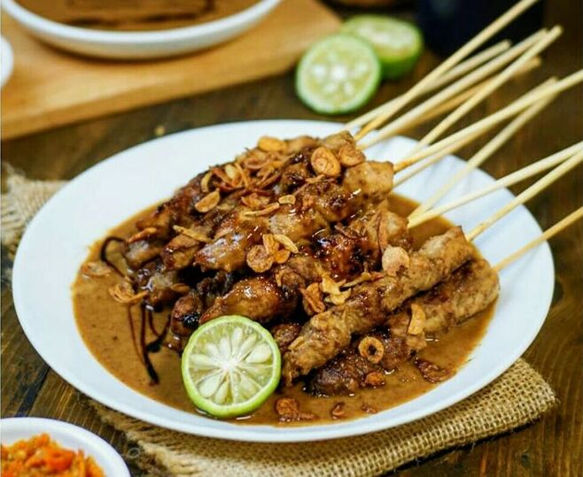

Terpopuler Minggu Ini

Rendang
Daging sapi dimasak lama dengan rempah khas Minang.
Rp 45.000

Sate Ayam
Potongan ayam bakar disajikan dengan bumbu kacang gurih.
Rp 25.000

Gudeg
Nangka muda dimasak manis dengan santan dan telur pindang.
Rp 30.000

Es Cendol
Minuman segar dari santan, gula merah, dan tepung beras hijau.
Rp 12.000